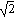

Factoring Expressions |
To factor an expression for an integer or rational function, place the cursor at the end of the expression and either:
- or -
Then press [Enter].
The "factor" command factors an integer into a product of primes, and factors a polynomial or rational function into a product of lower-order polynomials or rational functions.
To perform a more complete factorization, type a comma after "factor," and then type a comma-separated list of radicals occurring in the roots of the expression in the placeholder.
100 factor → 22 · 52
x2 − 7x + 12 factor → (x − 3) · (x − 4)
| Factoring Polynomials With Irrational Roots |
By default, Mathcad factors a polynomial with rational coefficients into a product of lower-order polynomials with rational coefficients, if possible. For a polynomial such as x2 − 2, which cannot be factored over the rational numbers because its roots are irrational, Mathcad returns the polynomial unchanged.
x2 − 2 factor → x2 − 2
To factor the polynomial further x2 − 2, type one of its roots, , after the keyword "factor."
This factors x2 − 2 into a product of polynomials whose coefficients involve .
Note: In general, Mathcad factors a polynomial over the field of numbers generated by its coefficients. For example, if appears among the coefficients, Mathcad factors the polynomial into terms containing .
To factor a polynomial with complex roots, insert the complex number i after "factor."
x2 + 1 factor, i → (x − i) · (x + i)
If you don't know the roots of the polynomial, solve it first using the keyword "solve."
Then copy and paste the radical appearing in the roots, or either one of the roots themselves, into the placeholder after "factor."
The following link opens a Mathcad worksheet containing live examples of "factor."
Another method for factoring is to select the expression and click Factor on the Symbolics menu. In this case the result will not automatically update if you make changes elsewhere in the worksheet.